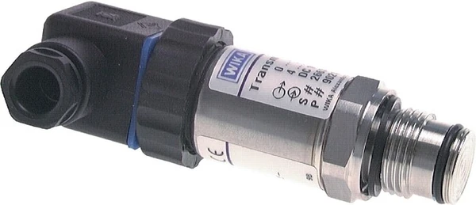

Với môi chất sệt, nhớt, có hạt hoặc dễ đóng cặn, cảm biến áp suất kết nối lỗ nhỏ thông thường dễ bị tắc, gây sai số. Cảm biến áp suất màng phẳng (flush diaphragm transmitter / frontbündige Membrane) WIKA giải quyết vấn đề này. Fast Group Engineering là đại lý cung cấp hàng chính hãng WIKA (Germany) tại Việt Nam.

Gợi ý chọn nhanh
- Cần đưa tín hiệu áp suất về PLC, DCS hoặc bộ hiển thị.
- Cần chọn 4-20 mA, 0-10 V, 2-wire hoặc độ chính xác.
- Cần so sánh transmitter tiêu chuẩn và màng phẳng.
- Dải đo, output, nguồn cấp và kết nối điện.
- Ren process, vật liệu wetted và cấp bảo vệ IP.
- Độ chính xác, nhiệt độ môi chất và yêu cầu chứng từ.
- Danh mục cảm biến áp suất WIKA.
- Bài 4-20 mA / 2-wire.
- Bài độ chính xác transmitter.
Tóm tắt nhanh
- Màng đo phẳng, đặt sát bề mặt kết nối (flush) — không có hốc/lỗ nhỏ để đọng cặn.
- Phù hợp môi chất sệt, nhớt, dạng bột/hạt, thực phẩm, dễ kết tinh.
- Dễ vệ sinh (CIP/SIP), giảm rủi ro tắc và sai số.
- Chọn theo dải đo, tín hiệu, kết nối process (ren/clamp), vật liệu màng.

Vì sao cần màng phẳng?
Transmitter tiêu chuẩn có lỗ dẫn áp nhỏ vào buồng cảm biến. Môi chất sệt/nhớt/có hạt sẽ bám và bít lỗ này, khiến giá trị đo sai hoặc "đơ". Màng phẳng đặt ngang bằng bề mặt tiếp xúc, không tạo hốc đọng — môi chất chảy qua sạch sẽ.
Ứng dụng điển hình
| Ngành | Môi chất |
|---|---|
| Thực phẩm – đồ uống | Siro, sốt, sữa đặc |
| Hóa chất | Dịch nhớt, dễ kết tinh |
| Xử lý nước/bùn | Bùn, nước thải có hạt |
| Sơn – mực | Chất lỏng độ nhớt cao |
| Dược phẩm | Yêu cầu vệ sinh CIP/SIP |
Màng phẳng vs kết nối tiêu chuẩn
| Tiêu chí | Flush diaphragm | Kết nối lỗ tiêu chuẩn |
|---|---|---|
| Môi chất sệt/hạt | Rất tốt | Dễ tắc |
| Vệ sinh | Dễ (CIP/SIP) | Khó |
| Giá | Cao hơn | Thấp hơn |
| Môi chất sạch, loãng | Không cần thiết | Phù hợp |
Cách chọn (Checklist)
- [ ] Dải đo theo áp làm việc.
- [ ] Tín hiệu: 4–20 mA (2-wire) hoặc khác.
- [ ] Kết nối process: ren G, hygienic clamp (Tri-Clamp), mặt bích.
- [ ] Vật liệu màng: inox 316L hoặc phủ đặc biệt theo môi chất.
- [ ] Nhiệt độ môi chất (có thể cần bộ làm mát/cooling element).
- [ ] Yêu cầu vệ sinh (thực phẩm/dược).
Chọn kiểu kết nối process cho đúng
Với transmitter màng phẳng, kiểu kết nối quyết định cả khả năng chống tắc lẫn khả năng vệ sinh:
| Kết nối | Đặc điểm | Phù hợp |
|---|---|---|
| Ren flush (G½, G1) | Lắp nhanh, kinh tế | Công nghiệp, xử lý nước |
| Hygienic clamp (Tri-Clamp) | Tháo lắp nhanh, vệ sinh CIP/SIP | Thực phẩm, dược |
| Mặt bích (flange) | Chịu áp cao, bít kín tốt | Hóa chất, đường ống lớn |
Lưu ý nhiệt độ & bộ làm mát
Màng đo tiếp xúc trực tiếp môi chất nên nhiệt độ cao truyền thẳng vào phần điện tử của transmitter. Nếu môi chất nóng vượt ngưỡng cho phép, cần chọn bản có bộ làm mát (cooling element) hoặc phần đệm tản nhiệt để bảo vệ mạch. Đây là điểm khác biệt quan trọng so với đo bằng đồng hồ cơ: transmitter điện tử nhạy với nhiệt hơn, nên luôn nêu rõ nhiệt độ môi chất và môi trường khi hỏi giá.
Vật liệu màng theo môi chất
Màng là bộ phận tiếp xúc trực tiếp và liên tục với môi chất, nên chọn vật liệu đúng là yếu tố sống còn về độ bền:
| Vật liệu màng | Chống ăn mòn | Môi chất phù hợp |
|---|---|---|
| Inox 316L | Tốt | Thực phẩm, nước, hóa chất nhẹ |
| Hastelloy | Rất cao | Axit, hóa chất mạnh |
| Tantalum | Cực cao | Axit đậm đặc, ăn mòn khắc nghiệt |
| Phủ PTFE/ECTFE | Cao, chống bám | Môi chất dính, kết tinh |
Flush transmitter vs diaphragm seal (màng ngăn)
Có hai cách xử lý môi chất khó. Flush transmitter tích hợp màng phẳng ngay tại đầu đo — gọn, phản hồi nhanh, phù hợp phần lớn ứng dụng. Diaphragm seal (màng ngăn/chemical seal) là một cụm màng rời nối với transmitter hoặc đồng hồ qua mao dẫn chứa dầu truyền áp — dùng khi cần cách ly hoàn toàn phần đo khỏi nhiệt độ rất cao, môi chất cực ăn mòn, hoặc khi vị trí đo và điểm đọc cách xa nhau. Diaphragm seal linh hoạt hơn nhưng đắt và phản hồi chậm hơn đôi chút. Chọn theo mức độ khắc nghiệt của môi chất và yêu cầu bố trí.
Sai lầm thường gặp
- Dùng transmitter lỗ tiêu chuẩn cho môi chất sệt/hạt: lỗ trích áp bị bít, giá trị "đơ" hoặc sai; đây là lý do phổ biến nhất khiến điểm đo hỏng.
- Bỏ qua yêu cầu vệ sinh: ngành thực phẩm/dược cần kết nối hygienic và vật liệu đạt chuẩn, không dùng ren thường.
- Chọn màng vật liệu không hợp môi chất: môi chất ăn mòn cần màng 316L hoặc phủ đặc biệt (Hastelloy, tantalum, PTFE...).
- Quên nhiệt độ cao: lắp trực tiếp vào môi chất nóng mà không có bộ làm mát làm hỏng điện tử.
Khi nào KHÔNG cần màng phẳng?
Nếu môi chất sạch, loãng như nước, khí, dầu thủy lực trong, thì transmitter kết nối lỗ tiêu chuẩn hoàn toàn đủ và tiết kiệm hơn đáng kể. Màng phẳng là giải pháp cho bài toán tắc và vệ sinh; dùng đúng chỗ để không trả thêm chi phí không cần thiết. Khi phân vân, hãy mô tả môi chất (độ nhớt, có hạt/cặn không, yêu cầu vệ sinh) để được tư vấn đúng cấu hình.
FAQ
Màng phẳng có đo được áp thấp không? Có, chọn dải đo phù hợp; màng phẳng còn tốt cho môi chất khó ở áp thấp.
Có bản vệ sinh cho thực phẩm không? Có, với kết nối hygienic (clamp) và vật liệu phù hợp.
Nhiệt độ cao có ảnh hưởng màng không? Nhiệt độ cao cần cân nhắc bản có bộ làm mát; tư vấn theo điều kiện cụ thể.
Có thể vệ sinh CIP/SIP trực tiếp không tháo cảm biến?
Có, với bản hygienic màng phẳng đặt sát (flush), dòng CIP/SIP quét sạch bề mặt màng mà không cần tháo — đúng yêu cầu ngành thực phẩm và dược.
Màng phẳng có hiệu chuẩn được không?
Được. Nên hiệu chuẩn định kỳ như transmitter thường; lưu ý màng chịu môi chất khắc nghiệt có thể trôi điểm nhanh hơn.
Ví dụ chọn nhanh theo ngành
Đo áp bơm siro trong nhà máy đồ uống: chọn flush transmitter kết nối Tri-Clamp, màng 316L, dải theo áp bơm, tín hiệu 4–20 mA, yêu cầu CIP/SIP. Đo áp bùn trong trạm xử lý nước thải: chọn kết nối ren flush hoặc mặt bích, màng 316L hoặc phủ chống bám, ưu tiên độ bền hơn yêu cầu vệ sinh. Đo dịch axit đậm đặc trong hóa chất: nâng màng lên Hastelloy hoặc tantalum, cân nhắc diaphragm seal nếu nhiệt độ cao. Cùng một họ sản phẩm, chỉ thay kết nối và vật liệu màng là phủ được nhiều bài toán khác nhau.
Cần tư vấn hoặc báo giá flush diaphragm transmitter?
Gửi môi chất, dải đo, kết nối, nhiệt độ để nhận báo giá trong 24h.
- Email: minhduc@fastgroup.vn · Zalo: (+84) 938 888 958
Fast Group Engineering – đại lý cung cấp hàng chính hãng WIKA (Germany) tại Việt Nam.
Bài liên quan: [Cảm biến áp suất WIKA 4–20 mA] · [Độ chính xác 0.2% vs 0.5% span] · [Checklist RFQ]